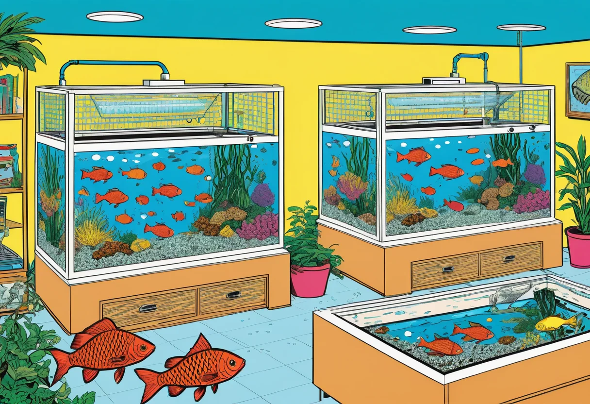

Nachzucht von Aquarienfischen – Zucht und Aufzucht
Die Nachzucht von Aquarienfischen ist eine der faszinierendsten und erfüllendsten Herausforderungen in der Aquaristik. Es ist ein großer Unterschied, ob man Fische nur hält oder ob man sie erfolgreich vermehrt und die Jungfische aufzieht. Die Zucht erfordert Geduld, Beobachtungsgabe und einiges an Fachwissen. Aber die Freude, wenn aus winzigen Eiern gesunde Jungfische heranwachsen, ist unbezahlbar. In diesem Guide erfährst du alles über die Grundlagen der Aquarienfisch-Zucht, von der Auswahl der Zuchttiere über die richtige Beckeneinrichtung bis zur Aufzucht der Jungfische.
Nicht alle Fischarten sind gleich einfach zu züchten. Manche Arten wie Platys, Guppys oder Zebrabärblinge vermehren sich fast von selbst, wenn die Bedingungen stimmen. Andere wie Skalare oder Zwergbuntbarsche brauchen etwas mehr Aufmerksamkeit und spezielle Bedingungen. Wieder andere wie Diskusfische oder die meisten Salmler sind echte Herausforderungen, die viel Erfahrung erfordern. Für den Einstieg in die Zucht empfiehlt es sich, mit den sogenannten „Anfänger-Arten“ zu beginnen, bevor man sich an anspruchsvollere Fische wagt.
Lebendgebärende – der perfekte Einstieg
Guppys, Platys, Mollys und Schwertträger
Lebendgebärende Zahnkarpfen (Poeciliidae) sind die einfachsten Zuchtfische überhaupt. Sie bringen lebende Jungtiere zur Welt, die sofort frei schwimmen und selbstständig fressen können. Ein gut bepflanztes Becken mit dichten Moospolstern oder feinfiedrigen Pflanzen bietet dem Nachwuchs genug Versteckmöglichkeiten vor den Erwachsenen – denn Lebendgebärende fressen ihre eigenen Jungen, wenn sie sie erwischen. Die Weibchen tragen die befruchteten Eier im Körper aus und werfen alle vier bis sechs Wochen 10 bis 50 Jungfische. Die Jungtiere wachsen schnell und sind bei regelmäßiger Fütterung mit feinem Flockenfutter oder Artemia-Nauplien innerhalb von drei bis vier Monaten geschlechtsreif.
Für die gezielte Zucht setzt du ein oder zwei Männchen mit drei bis vier Weibchen in ein gut bepflanztes 20- bis 40-Liter-Becken. Die Weibchen sollten größer sein als die Männchen, um Dominanzprobleme zu vermeiden. Nach der Geburt können die Jungfische im selben Becken aufwachsen, solange genug Versteckmöglichkeiten vorhanden sind. Für höhere Überlebensraten setzt du das trächtige Weibchen kurz vor der Geburt in ein separates Aufzuchtbecken und nimmst es nach der Geburt wieder heraus.
Eierlegende Fische – die nächste Stufe
Zebrabärblinge (Danio rerio)
Zebrabärblinge sind die ideale Einsteiger-Zuchtfische unter den eierlegenden Arten. Sie laichen bereitwillig ab, wenn die Bedingungen stimmen. Für die Zucht brauchst du ein separates 10- bis 20-Liter-Becken mit flachem Wasserstand (10 bis 15 cm). Setze ein bis zwei Weibchen (dickbauchig) und zwei bis drei Männchen (schlanker, farbintensiver) am Abend in das Zuchtbecken. Lege einen Laichrost (ein Gitter im Abstand von einem Zentimeter über dem Beckenboden) oder grobkörnigen Kies ein, damit die Eier nach dem Ablaichen durchfallen und nicht von den Eltern gefressen werden. Zebrabärblinge laichen bei Tagesanbruch. Nach dem Ablaichen nimmst du die Eltern aus dem Becken. Die Eier schlüpfen nach 48 bis 72 Stunden. Die Jungfische sind sehr klein und brauchen zunächst Infusorien oder Staubfutter, später Artemia-Nauplien.
Skalare (Pterophyllum scalare)
Skalare sind beliebte Zierfische und ihre Zucht ist eine spannende Herausforderung. Sie bilden feste Paare und laichen auf schrägen Flächen ab – idealerweise auf einem Schieferstück oder einem großen Blatt, das du senkrecht oder schräg im Becken anbringst. Das Weibchen legt mehrere hundert Eier, die das Männchen sofort befruchtet. Beide Eltern bewachen und befächeln die Eier bis zum Schlupf nach etwa drei bis fünf Tagen. Die Larven hängen zunächst an der Ablaichstelle und schwimmen nach fünf bis sieben Tagen frei. Ab diesem Zeitpunkt müssen die Eltern aus dem Becken entfernt werden, da sie die Jungfische sonst fressen können. Die Aufzucht ist anspruchsvoll: Die Jungtiere brauchen feinstes Futter (Artemia, Mikrowürmer) und regelmäßige Wasserwechsel mit Wasser aus dem Elternbecken, damit die Wasserwerte stabil bleiben.
Das richtige Zuchtbecken
Ein separates Zuchtbecken ist für die meisten Fischarten empfehlenswert. Die Größe richtet sich nach der Fischart: Für lebendgebärende Zahnkarpfen reichen 20 Liter, für Skalare oder Buntbarsche sind 40 bis 80 Liter besser geeignet. Das Zuchtbecken sollte einfach eingerichtet sein: ein Schwammfilter (beimpft mit Bakterien aus dem Hauptbecken), eine Heizung, spärliche Beleuchtung und je nach Art Laichsubstrat (Moos, Laichkegel, Schieferplatte, feinfiedrige Pflanzen). Auf Bodengrund wird meist verzichtet – er erschwert die Reinigung und kann Futterreste verstecken, die die Wasserqualität beeinträchtigen.
Die Wasserwerte im Zuchtbecken sollten den Werten im Hauptbecken entsprechen oder leicht abweichen, um den Laichreiz auszulösen. Viele Fische laichen nach einem kräftigen Wasserwechsel mit etwas kühlerem Wasser ab – das simuliert die Regenzeit, in der in der Natur die meisten Fische laichen. Ein Teilwasserwechsel von 30 bis 50 Prozent mit leicht abgesenkter Temperatur (2 bis 3 Grad kühler) ist oft der Auslöser für die Fortpflanzungsbereitschaft.
Die Auswahl der Zuchttiere
Nicht jeder Fisch ist als Zuchttier geeignet. Wähle nur kräftige, gesunde Tiere mit guter Färbung und typischem artgerechtem Verhalten aus. Fische mit Verformungen, eingeklemmten Flossen oder blasser Farbe solltest du nicht zur Zucht einsetzen. Wenn du bestimmte Merkmale erhalten oder verbessern möchtest (z. B. eine besonders intensive Rotfärbung bei Guppys), wähle die Tiere gezielt nach diesen Merkmalen aus. Die Zucht ist auch ein Weg, um die Qualität deines Fischbestands langfristig zu verbessern.
Für den Zuchteinsatz sollten die Fische geschlechtsreif sein, aber nicht zu alt. Bei den meisten Arten ist das Alter von 6 bis 18 Monaten optimal. Ältere Tiere haben oft eine geringere Fruchtbarkeit und schwächere Nachkommen. Ein guter Zustand der Zuchttiere zeigt sich an klaren Augen, unbeschädigten Flossen und einem reaktionsschnellen Verhalten. Fette, überfütterte Tiere sind ebenso ungeeignet wie unterernährte – ein ausgewogener Ernährungszustand ist entscheidend.
Fütterung der Jungfische – die größte Herausforderung
Die Aufzucht der Jungfische ist meist der schwierigste Teil der Zucht. Die allererste Nahrung muss winzig klein sein – oft kleiner als das Auge der Jungfische. Je nach Art kommen verschiedene Erstfutter in Frage:
- Infusorien: Einzellige Mikroorganismen, die in jedem eingefahrenen Aquarium vorkommen. Du kannst sie selbst ansetzen, indem du etwas Heu oder Salatblätter in Wasser legst und gären lässt.
- Staubfutter: Feinstes Pulverfutter aus dem Aquaristikhandel. Einfach zu handhaben, aber nicht für alle Fischarten geeignet.
- Artemia-Nauplien: Frisch geschlüpfte Salinenkrebse. Sie sind der Goldstandard der Aufzuchtfütterung. Artemia-Eier werden in Salzwasser (ca. 30 g/l) bei 25 bis 28 °C zum Schlüpfen gebracht und nach 24 bis 48 Stunden abgesiebt und den Jungfischen angeboten.
- Mikrowürmer (Grindalwürmer): Kleine Fadenwürmer, die auf einem feuchten Haferflockenbrei gezüchtet werden. Sie sind eine ausgezeichnete proteinreiche Nahrung.
- Rädertierchen: Noch kleiner als Artemia-Nauplien, ideal für sehr kleine Jungfische.
Die Fütterung sollte in den ersten Wochen mehrmals täglich (alle 4 bis 6 Stunden) in sehr kleinen Portionen erfolgen. Futterreste belasten das Wasser enorm – tägliche Wasserwechsel von 20 bis 30 Prozent sind in dieser Phase Pflicht. Ein Tropfen Testkit für Ammoniak und Nitrit sollte immer griffbereit sein, denn Jungfische sterben schneller an schlechter Wasserqualität als an Hunger.
Wachstum und Heranführung an normales Futter
Nach ein bis zwei Wochen sind die Jungfische groß genug für feines Granulat- oder Flockenfutter. Zerkleinere das Futter zwischen den Fingerspitzen, bevor du es ins Becken gibst. Nach drei bis vier Wochen können die meisten Jungfische normales, feines Futter aufnehmen. Ab diesem Zeitpunkt wachsen sie bei regelmäßiger Fütterung und sauberem Wasser sehr schnell. Die Geschlechter beginnen sich bei vielen Arten nach sechs bis zwölf Wochen zu unterscheiden. Wenn du zu viele männliche Tiere hast, solltest du sie abgeben oder in ein separates Becken umsetzen, um Konkurrenzkämpfe zu vermeiden.
Häufige Fehler bei der Aufzucht
- Zu große Futterpartikel: Jungfische können nur Futter aufnehmen, das kleiner ist als ihr Maul. Teste die Futtergröße, bevor du fütterst.
- Überfütterung: Futterreste verfaulen und belasten das Wasser. Zweimal täglich kleine Portionen sind besser als eine große.
- Zu wenig Wasserwechsel: In Aufzuchtbecken steigen die Schadstoffe schnell. Tägliche Wasserwechsel sind in den ersten Wochen unverzichtbar.
- Zu kalte Temperaturen: Jungfische brauchen konstant warmes Wasser, oft 1 bis 2 Grad wärmer als die Adulttiere.
- Kein Schwammfilter: Ein leistungsstarker Innenfilter mit zu starker Strömung kann Jungfische ansaugen oder erschöpfen. Ein Schwammfilter mit geringer Strömung ist ideal.
- Eltern zu früh oder zu spät entfernt: Manche Fische bewachen ihren Nachwuchs, andere fressen ihn. Informiere dich vor der Zucht über das Verhalten der Art.
Zucht als Teil der verantwortungsvollen Aquaristik
Nachgezüchtete Fische sind in der Regel gesünder, stressresistenter und besser an die Haltung im Aquarium angepasst als Wildfänge. Wer selbst züchtet, leistet einen aktiven Beitrag zum Artenschutz und zur nachhaltigen Aquaristik. Viele Fischarten sind in ihren natürlichen Lebensräumen bedroht – durch Gewässerverschmutzung, Lebensraumzerstörung oder Überfang für den Handel. Nachzuchten reduzieren den Druck auf die Wildbestände und erhalten wertvolle Zuchtlinien für die Zukunft. Zudem sind nachgezüchtete Fische oft günstiger und leichter erhältlich als Wildfänge.
🛒 Zubehör für die Fischzucht
Diese Produkte erleichtern die Zucht und Aufzucht von Aquarienfischen:
Fazit – Die Freude an der Zucht
Die Nachzucht von Aquarienfischen ist eine der lohnendsten Erfahrungen in der Aquaristik. Sie erfordert zwar etwas mehr Einsatz als die reine Haltung, aber die Beobachtung des gesamten Fortpflanzungszyklus – vom Balzverhalten über die Eiablage bis zum Heranwachsen der Jungtiere – ist einzigartig und tief befriedigend. Starte mit einfachen Arten wie Guppys oder Zebrabärblingen, sammle Erfahrung und wage dich dann an anspruchsvollere Fische vor. Jede erfolgreiche Zucht ist ein kleiner Triumph und ein Schritt zu mehr Unabhängigkeit von Wildfängen.
Mehr zu den einzelnen Fischarten und ihren Haltungsansprüchen findest du in unseren Artikeln Lebendgebärende Zahnkarpfen und Beliebteste Aquarienfische.